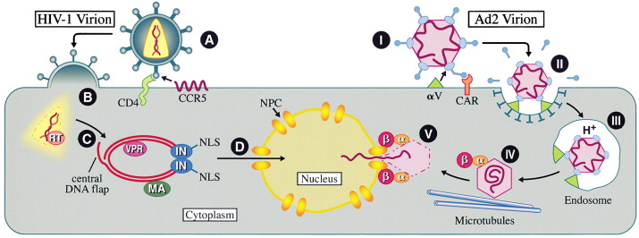

Volume 105, Issue 6, 15 June 2001, Pages 697–700

Journey to the Center of the Cell


- Howard Hughes Medical Institute and Department of Genetics, Duke University Medical Center, Durham, NC 27710 USA
- Available online 28 May 2004
The mechanisms used by pathogenic human viruses to cross the plasma membrane have been the focus of considerable attention. However, penetration into the cell cytoplasm is insufficient to permit the replication of many virus species. Specifically, all DNA viruses, except for pox viruses, as well as some viral families that bear RNA genomes, including retroviruses and influenza viruses, replicate in the nucleus. Only here can these viruses gain access to the cellular factors they require for the amplification and transcription of their genome and for the posttranscriptional processing of viral mRNA species. Therefore, these viruses not only have to cross the plasma membrane but must also traverse the cytoplasm and then enter the cell nucleus. In this review, I will briefly outline what is known about this process, using Human Immunodeficiency Virus Type 1 (HIV-1) and Adenovirus Type 2 (Ad2) as primary examples. A more comprehensive discussion is provided in a recent review by Whittaker et al. (2000).
Introduction to Nuclear Import
Considerable progress has recently been made in understanding the mechanisms underlying the sequence-specific transport of macromolecules between nucleus and cytoplasm and the critical role played by the nuclear pore complex (NPC) in this process (Reviewed by Nakielny and Dreyfuss, 1999). NPCs are large (125 MDa) structures that span the nuclear membrane and protrude into both cytoplasm and nucleoplasm. All nucleocytoplasmic transport occurs via the central aqueous channel found in NPCs. Importantly, the maximum diameter of this channel may be only ∼25 nm. As many viral nucleocapsids are considerably larger than 25 nm, achieving the nuclear import of the viral genome presents a potentially formidable challenge.
Most active nuclear import is mediated by nuclear transport receptors belonging to a family of proteins termed importins or karyopherins. While each importin family member is able to recognize one or more distinct classes of nuclear localization signal (NLS) directly, one commonly utilized import receptor, termed importin β (Imp β), also utilizes the importin α (Imp α) family of adaptor proteins for cargo recruitment. For example, many basic NLSs are recognized by Imp α, leading to the cytoplasmic formation of a ternary complex consisting of Imp β, Imp α, and the NLS-bearing cargo. This complex then docks at the cytoplasmic face of the NPC, due to specific interactions between Imp β and components of the NPC, before migrating through the NPC into the nuclear interior, where the complex is disassembled.
Retroviruses
All retroviral virions contain two copies of their RNA genome complexed with the nucleocapsid protein and reverse transcriptase (RT). This ribonucleoprotein complex is located within a shell formed by the capsid protein that also encloses the viral integrase (IN). An additional protein, termed VPR, is packaged within the capsid of HIV-1. All retroviral capsids are surrounded by a lipid membrane through which protrude the viral envelope (ENV) glycoproteins. A final viral structural protein, termed matrix (MA), is found in a layer between capsid and membrane and, in HIV-1, may also be present in small amounts within the capsid.
Research into the early steps of retroviral infection has primarily focused on HIV-1 and on murine leukemia virus (MLV), a prototypic oncogenic retrovirus. In the case of HIV-1, infection initiates with binding of ENV to the CD4 receptor, followed by recruitment of a coreceptor such as CCR5 (Figure 1A). These interactions cause conformational shifts in ENV that induce fusion of the virion and target cell membranes and entry of the viral capsid into the cytoplasm (Figure 1B). At this stage, the HIV-1 capsid undergoes partial disassembly and also commences reverse transcription of the RNA genome, leading to the generation of a subviral particle termed a preintegration complex, or PIC (Figure 1C). The PIC contains the double-stranded linear DNA intermediate as well as at least four viral proteins, i.e., MA, RT, IN, and VPR, and has been reported to be ∼56 nm in average diameter (Miller et al., 1997).
- 

Figure 1. Viral Invasion of the Infected Cell NucleusSchematic representation of key steps in the nuclear entry of the HIV-1 preintegration complex (A–D) and of the Ad2 genome (I–V). See text for detailed discussion
Although the steps involved in HIV-1 PIC formation remain largely undefined, the cellular protein cyclophilin A appears to play a critical role in the appropriate disassembly of the HIV-1 capsid early after infection (Braaten et al., 1996). While cyclophilin A function is therefore essential for HIV-1 infection in culture, this host cell activity is not required for the replication of other retroviral species, including other lentiviruses.
Retroviral replication requires integration of the proviral DNA intermediate into the host cell genome, where it is expressed under the control of host cell transcription factors. However, PICs derived from many retroviruses, including MLV, are unable to enter intact nuclei. Instead, the MLV genome undergoes cytoplasmic reverse transcription and the MLV PIC then waits for the breakdown in the nuclear envelope that occurs during mitosis to enter the nucleus. As a result, MLV is unable to replicate in nondividing cells. In contrast, HIV-1 is able to productively infect nondividing cells (Weinberg et al., 1991) and the HIV-1 PIC must therefore be able to enter intact nuclei. The primary protein mediator of this nuclear import is the HIV-1 IN protein, which has been shown to contain a short NLS sequence that is important for PIC import into the nucleus, but dispensable for the enzymatic activity of IN (Figure 1D)(Bouyac-Bertoia et al., 2001). While the cellular target for the unusual IN NLS sequence is not presently known, this NLS appears distinct from the class of basic NLSs recognized by Imp α.
A second component of the HIV-1 PIC that is important for nuclear entry is not a protein but rather an unusual DNA structure (Zennou et al., 2000). Specifically, the HIV-1 DNA intermediate contains a discrete, centrally located region where a third DNA strand forms a short overlap termed the central DNA flap (Figure 1C). This central DNA flap, which is formed during reverse transcription, may enhance the nuclear entry of the PIC by recruiting karyophilic cellular proteins that directly mediate PIC nuclear import. Alternately, the central DNA flap may be required for the PIC to achieve a conformation appropriate for import. As noted above, the PIC has been proposed to be ∼56 nm in diameter, yet is known to contain an ∼9.4 kb DNA intermediate that is up to ∼3.3 μm in length. Clearly, this DNA molecule must be condensed within the PIC, and it is in fact known that IN forms a multimer that juxtaposes the two ends of the linear proviral intermediate (Figure 1C)(Miller et al., 1997). The central DNA flap may allow the condensation of this DNA molecule into the PIC in a form that is permissive for nuclear translocation. Given the large size of the PIC, and the small diameter of the central channel of the NPC, it seems likely that the PIC must undergo significant conformational shifts and/or deformations during nuclear import.
It appeared possible that HIV-1 might utilize the same mechanism as MLV to infect dividing cells and use the NPC entry route solely to infect nondividing cells. However, mutation of the NLS present in IN or deletion of the central DNA flap inhibits HIV-1 infection of both nondividing and dividing cells Zennou et al. 2000 and Bouyac-Bertoia et al. 2001. These data suggest that the active nuclear import of the PIC is a key step in HIV-1 infection of all target cells and also imply that the nuclear entry of the MLV PIC during mitosis may not be a passive process.
Two other HIV-1 proteins have been proposed to play a specific role in the infection of nondividing cells. The first of these is the MA protein, which is present in the PIC and which has been proposed to contain a basic NLS that targets the PIC for nuclear import (Bukrinsky et al., 1993). However, other groups have been unable to demonstrate a functional NLS within MA and several reports have argued that this basic sequence within MA is dispensable for infection of nondividing cells (Reil et al., 1998). A second protein that may selectively promote the infection of nondividing cells is the small HIV-1 auxiliary protein VPR (Vodicka et al., 1998). VPR has been reported to associate with NPCs and to interact with NPC components. Further, VPR is present in the PIC and HIV-1 mutants lacking VPR replicate less effectively than wild-type HIV-1 in nondividing macrophages. However, it is not clear that this defect is due to poor PIC nuclear import, as others have presented data showing that VPR-deficient HIV-1 can infect nondividing cells efficiently Reil et al. 1998 and Bouyac-Bertoia et al. 2001. Therefore, although VPR may well facilitate the infection of nondividing cells by HIV-1, it does not play an essential role in the nuclear import of the HIV-1 PIC.
Adenoviruses
Ad2 virions are ∼90 nm in diameter and form nonenveloped icosahedrons with twelve vertices and twenty facets. The facets consist largely of trimers of the hexon protein while the vertices are capped by fibers that are anchored to the virion by the penton base protein. Within the capsid is the linear DNA genome, which is associated with several virion proteins. These include protein VI, which anchors the DNA to the inner wall of the capsid; protein VII, which is important for condensation of the genome; and the terminal protein, which is bound to the ends of the genome.
Infection of cells by Ad2 initiates with binding of the fiber protein to the coxsackie adenovirus receptor (CAR), followed by binding of the penton base protein to a coreceptor belonging to the αV integrin family (Figure 1, I). This latter interaction induces release of the fiber protein and initiates internalization of bound virions into early endosomes via clathrin coated pits (Figure 1, II). Here, the drop in pH induces an at-present poorly defined conformational shift in the Ad2 virion that induces the rupture of the early endosome membrane and allows the entry of the partially uncoated virion into the cytoplasm (Figure 1, III) (Greber et al., 1993). This rupture appears to be mediated, at least in part, by the integrin/penton base protein complex. Once the virion reaches the reducing environment of the cytoplasm, the integrin/penton base complex also induces the activation of an Ad2-encoded cysteine protease, termed L3/p23, located within the virion. This activation induces further disassembly of the Ad2 virion, including degradation of protein VI that anchors the Ad2 DNA genome within the capsid (Greber et al., 1996) (Figure 1, IV). The subsequent directional movement of the partially uncoated Ad2 virion through the cytoplasm to the nucleus is thought to be mediated by the interaction of virion particles with the microtubule-dependent dynein molecular motor complex.
Once the partially disassembled Ad2 virion reaches the nuclear periphery, it docks at the NPC in a process that is likely mediated by NLS sequences present on the hexons. This docking event is blocked by inhibitors specific for Impα, and therefore probably involves recruitment of Impα/Impβ heterodimers to the virion (Figure 1, IV) (Saphire et al., 2000). Docking at the NPC induces the final disassembly of the Ad2 virion and activates the translocation of the linear DNA genome into the cell nucleus (Figure 1, V)(Greber et al., 1997). The genome is thought to be imported as a complex with a small subset of virion proteins that includes the terminal protein and DNA binding protein VII. While the terminal protein contains an NLS, it remains unclear whether this plays a role in Ad2 genomic DNA import.
Herpes Viruses
Herpes Simplex Virus Type 1 (HSV-1) is a large DNA virus bearing an icosahedral capsid of ∼125 nm in diameter. This capsid is covered first by a layer of proteins, termed the tegument, and finally by an envelope through which protrude several viral glycoproteins. HSV-1, like HIV-1, enters the cell by glycoprotein-mediated fusion at the cell surface. This results in the transfer of the HSV-1 capsid and tegument proteins into the cytoplasm, where a subset of the latter dissociate. HSV-1 frequently infects neurons and the directional movement of the HSV-1 capsid toward the nucleus may be particularly important in these elongated cells. In fact, evidence suggests that HSV-1, like Ad2, is transported to the nucleus along microtubules by the dynein molecular motor complex (Sodeik et al., 1997).
Once the HSV-1 capsid reaches the nucleus, it docks at an NPC in a process mediated by Impβ alone, rather than by the Impβ/Impα heterodimer used by Ad2 (Ojala et al., 2000). This docking event requires tegument proteins that remain associated with the capsid after cytoplasmic entry. After binding at the NPC, the HSV-1 capsid undergoes a conformational shift that results in the extrusion of the large DNA genome of HSV-1 from the capsid and into the nucleus through the NPC. An interesting temperature sensitive mutant of HSV-1 allows capsid docking at the NPC but not DNA entry. This mutation has been mapped to a gene encoding a minor component of the HSV-1 tegument that is associated with capsid pentons. This observation is consistent with the hypothesis that the pentons provide the channel through which the HSV-1 genome is released into the nucleus after NPC docking (Zhou et al., 1999). Of note, the HSV-1 capsid is unlike the Ad2 capsid in that it does not disassemble during DNA release. Rather, empty HSV-1 capsids remain associated with the NPC for some time after infection and can be readily detected by electron microscopy.
Influenza Viruses
The negative-sense RNA genome of influenza virus exists in eight distinct segments. In influenza virions, each of these genomic segments is coated by the viral nucleoprotein (NP) and these are in turn located within an inner shell consisting of the viral matrix protein M1. The outer viral envelope contains the M2 integral membrane protein as well as the viral hemagglutinin (HA) protein. After initial binding to target cells, mediated by the HA glycoprotein, virions are internalized via endocytosis. Once the influenza virions reach late endosomes, they encounter a pH sufficiently low to induce a conformational shift in HA that induces membrane fusion.
Low pH also induces a conformational shift in the M1 protein that induces the essentially complete disassembly of the influenza virion and precipitates the release of the eight viral ribonucleoprotein complexes into the cell cytoplasm (Bui et al., 1996). This latter step requires the action of the M2 ion channel, which promotes acidification of the virion interior. Once the eight viral ribonucleoproteins reach the cytoplasm, they are able to enter the nucleus individually as the result of Impα-specific NLS sequences present on the viral NP (O'Neill et al., 1995).
Perspective
This brief overview of the strategies used by viruses to transport their genomes into the nuclei of target cells reveals that there are considerable differences in detail. Nevertheless, several common themes are apparent. Thus, the nuclear import of viral nucleic acids appears to be generally mediated by associated viral proteins that contain NLS sequences that are, in turn, recognized by cellular nuclear import factors. Also, nuclear import of viral genomes invariably occurs via the NPC, with the exception of certain retroviruses, which simply wait for mitosis to enter the nucleus. Most importantly, viral infection generally requires the controlled, step-wise disassembly of virions. This is particularly apparent for virions that contain large genomes. For example, the disassembly of Ad2 virions clearly involves a series of carefully choreographed steps beginning shortly after binding to the cell surface and ending with final dissolution of the Ad2 capsid at the NPC (Greber et al., 1993). Nuclear import of the HSV-1 genome is in many respects similar to Ad2, although the HSV-1 capsid is not entirely disassembled after docking at the NPC. HIV-1 virions undergo extensive disassembly in the cytoplasm, in a process that remains only poorly understood, to generate a PIC that may be only just small enough to move through the NPC. Finally, influenza virions undergo complete disassembly at the time of cytoplasmic entry and disgorge eight viral ribonucleoproteins that independently enter the nucleus after recruitment of cellular import factors.
While considerable progress has been made in the last decade in deciphering key steps in the process of viral nuclear entry, much remains to be discovered. Progress in this area has clearly been slowed by the technical difficulties of working with partially disassembled virions, as these are generally far more labile than intact virion particles. In addition, for viruses such as HIV-1, the high total particle to infectious particle ratio makes it difficult to be sure that total HIV-1 PICs isolated from the cytoplasm of infected cells are in fact truly representative of infectious PICs. This concern is increasingly being addressed by the development of in vitro assays that can accurately recreate the nuclear import of viral genomes and that can therefore be used to not only confirm the biological activity of isolated subviral particles but also identify viral and cellular factors that play a critical role in the import process Saphire et al. 2000 and Ojala et al. 2000.
Regardless of how each virus achieves virion disassembly and nuclear import, it appears clear that drugs that could stabilize the virion structure, and hence interfere with nuclear entry of the viral genome, would potentially be effective inhibitors of viral replication. In fact, a family of antiviral agents that selectively interfere with the disassembly of influenza virions, by inhibiting the action of the M2 ion channel (Pinto et al., 1992), is already in clinical use. It has also been demonstrated that drugs, such as cyclosporin A, that block the interaction of the cellular chaperonin cyclophilin A with the viral capsid protein, can selectively inhibit the appropriate disassembly of HIV-1 virions and hence prevent HIV-1 infection in culture (Braaten et al., 1996). These precedents suggest that a more complete understanding of how other pathogenic viruses achieve the nuclear delivery of their genetic information could lead to the development of novel, and potentially highly effective, antiviral drugs.
References
- Bouyac-Bertoia et al. 2001
Mol. Cell, 7 (2001), pp. 1025–1035

- Braaten et al. 1996
J. Virol., 70 (1996), pp. 3551–3560
- Bui et al. 1996
J. Virol., 70 (1996), pp. 8391–8401
- Bukrinsky et al. 1993
Nature, 365 (1993), pp. 666–669
- Greber et al. 1997
EMBO J., 16 (1997), pp. 5998–6007
- Greber et al. 1996
EMBO J., 15 (1996), pp. 1766–1777
- Greber et al. 1993
Cell, 75 (1993), pp. 477–486
- Miller et al. 1997
J. Virol., 71 (1997), pp. 5382–5390
- Ojala et al. 2000
Mol. Cell. Biol., 20 (2000), pp. 4922–4931
- O'Neill et al. 1995
J. Biol. Chem., 270 (1995), pp. 22701–22704
- Nakielny and Dreyfuss 1999
Cell, 99 (1999), pp. 677–690
- Pinto et al. 1992
Cell, 69 (1992), pp. 517–528
- Reil et al. 1998
EMBO J., 17 (1998), pp. 2699–2708
- Saphire et al. 2000
J. Biol. Chem., 275 (2000), pp. 4298–4304
- Sodeik et al. 1997
J. Cell Biol., 136 (1997), pp. 1007–1021
- Vodicka et al. 1998
Genes Dev., 12 (1998), pp. 175–185
- Weinberg et al. 1991
J. Exp. Med., 174 (1991), pp. 1477–1482
- Whittaker et al. 2000
Annu. Rev. Cell Dev. Biol., 16 (2000), pp. 627–651
- Zennou et al. 2000
Cell, 101 (2000), pp. 173–185
- Zhou et al. 1999
J. Virol., 73 (1999), pp. 3210–3218

- Correspondence: Bryan R. Cullen, 919-694-3369 (phone), 919-681-8979 (fax)
Copyright © 2001 Cell Press. All rights reserved.
")
{kind=link}
{kind=link}